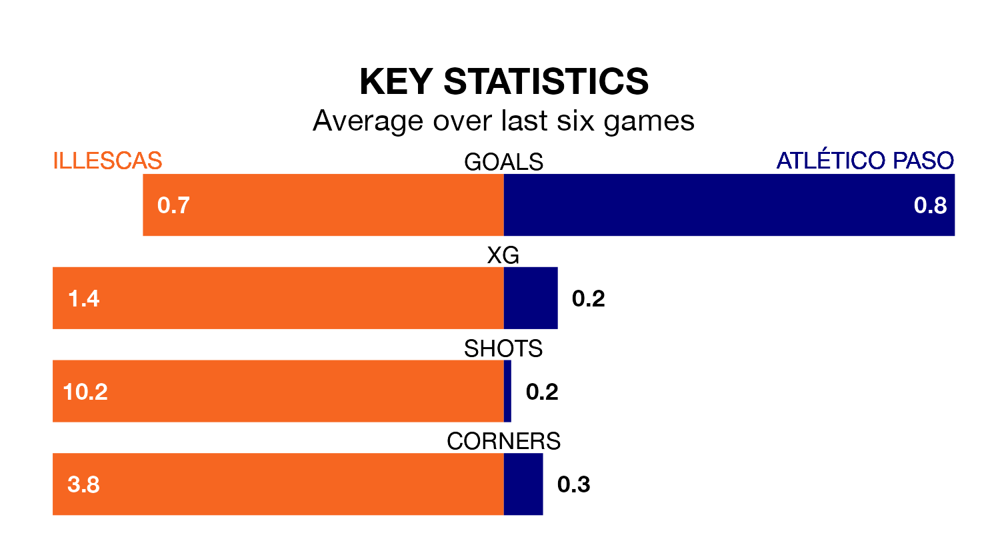

Two of Segunda División RFEF Group 5's meanest defences go head-to-head at Estadio Municipal de Illescas on Sunday, when Atlético Paso visit Illescas.
No teams have conceded fewer goals than Atlético Paso to date: the away side have let in just eight goals in 19 games.
Illescas have conceded 17 goals in 19 games, giving them the joint-fourth tightest back line so far this season.
Atlético Paso are top of the table after 19 games, of which they have won nine and drawn seven, earning 34 points.
Illescas are four places behind the away team in fifth, with nine wins and five draws putting them on 32 points.
The hosts are in mixed form in Segunda División RFEF Group 5, with three wins and a draw from their last six games.
With three wins and two draws over that period, Atlético Paso's form is slightly better – they have taken 11 points from 18, compared to Illescas's 10.
Illescas's last match was on January 20, a 1-0 win against Llerenense.
Atlético Paso beat CD Badajoz 1-0 last time out, on Sunday.
Updated: 08:51 (UTC), 25/01/24